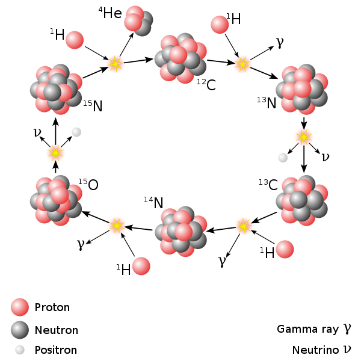
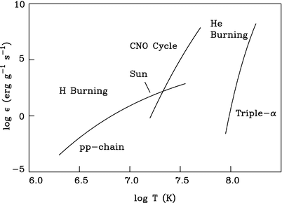
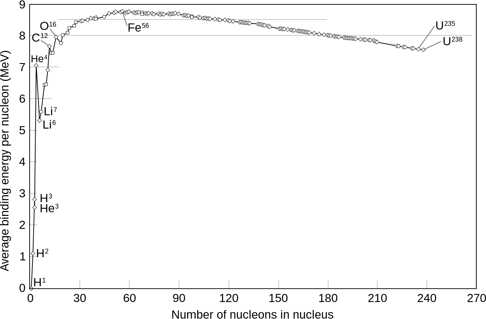
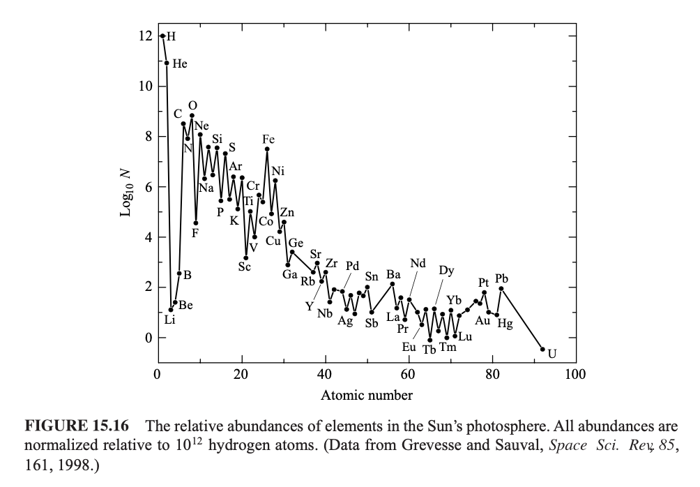
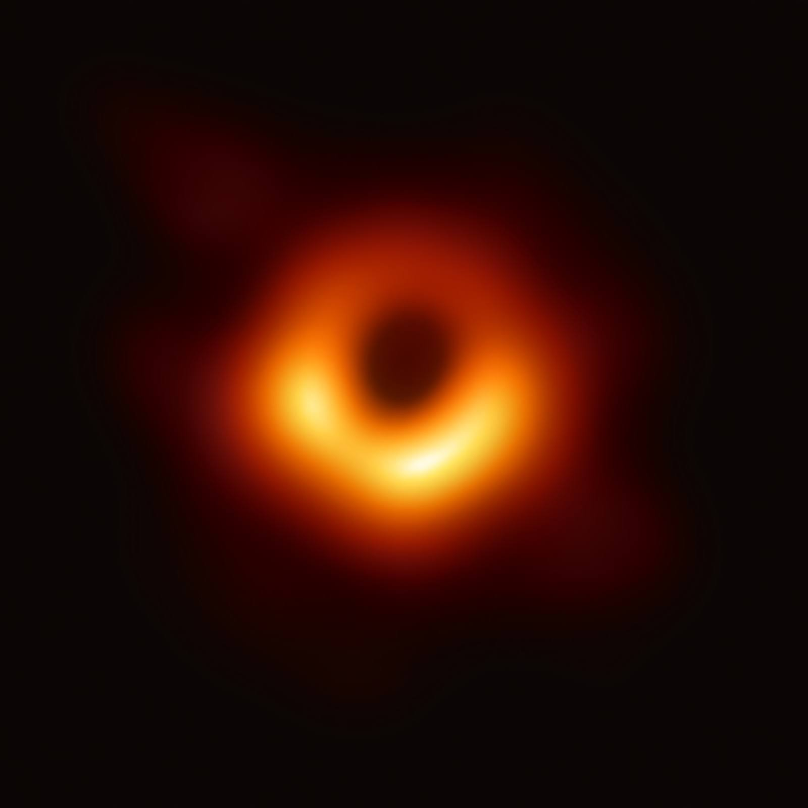

In the previous packet, we investigated the fate of an isolated solar-mass star as it evolved off the main sequence. As hydrogen became less abundant, helium accumulated in the core. Gravitational contraction and the increased speed of hydrogen-shell burning resulted in larger core temperatures inflating the star as it climbed the red giant branch.
Once the core temperature reached \(\sim 10^8\)K\(=100\)MK, helium fusion began. However, by then the core was in a degenerate state in which the pressure was only weakly dependent on the temperature. This resulted in a brief helium flash of only a few hours followed by a short 10,000-year period during which the red giant regains hydrostatic equilibrium.
Once equilibrium is regained, the giant remains on the horizontal branch, stably fusing helium into carbon in the core by the triple-alpha process. At these temperatures (\(\sim 2\times 10^8\)K\(=200\)MK), carbon and helium can synthesize oxygen, but it is still not hot enough for carbon-carbon fusion (\(\sim 5\times 10^8\)K\(=500\)MK), so the burn-out process repeats, and the star ascends the asymptotic giant branch.
The extreme temperature-sensitivity of the triple-alpha process (problem 19 in previous packet) causes the core of the star to become increasingly unstable even as the star has grown to \(500 R_\odot\). As the dying star convulses repeatedly over the span of ten millennia, a large fraction of all the material of the star is flung outward at higher than escape speed, resulting in a planetary nebula with a carbon-oxygen white dwarf at its center.
In this packet, we will explore the variations of this evolution that result from significant differences in mass and/or not being isolated.
Brown Dwarfs (\(M<0.07 M_\odot\))
Extremely low-mass \(M<0.07 M_\odot\) protostars never reach the hydrogen ignition temperatures in their core.
Problem 1
Convert this bound to Jupiter masses \(M_J=2\times 10^{27}\)kg and comment on how far off the claim “Jupiter is a failed star” is. Jupiter’s core temperature is \(\sim 24{,}500\)K. Where is this heat coming from?
# YOUR CODE HEREraiseNotImplementedError()
---------------------------------------------------------------------------NotImplementedError Traceback (most recent call last)
CellIn[4], line 2 1# YOUR CODE HERE----> 2raiseNotImplementedError()
NotImplementedError:
Recall that we previously estimated the gravitational energy of an object of size \(R\) assembled from disparate tiny parts of total mass \(M\) to be \(U\sim G\frac{M^2}R\). We then used this to estimate the pressure \(P\sim U/V\) where \(V=\frac{4}{3}\pi R^3\) is the volume of the object. Finally, we related this to the temperature of an ideal gas through the ideal gas law \(PV=Nk_BT\).
Problem 2
Reassemble all the pieces above to derive an estimate for the temperature of such an astrophysical object by following the steps:
First, show that \[T= \frac{GM^2}{k_BNR}\]
Assume the bulk of the mass is made up of nucleons (protons and neutrons). Argue that in this case \(M=Nm_p\), and use this to show that \[T= \frac{GMm_p}{k_BR} \quad (1)\]
A typical brown dwarf has a radius \(\sim20\%\) larger than that of Jupiter. Use this and the radius \(R_{\mathrm{Jupiter}}\sim 7\times 10^7\)m of Jupiter, to estimate the temperature in the core of a brown dwarf. Is this enough to initiate hydrogen fusion?
YOUR ANSWER HERE
# YOUR CODE HEREraiseNotImplementedError()
---------------------------------------------------------------------------NotImplementedError Traceback (most recent call last)
CellIn[5], line 2 1# YOUR CODE HERE----> 2raiseNotImplementedError()
NotImplementedError:
These “failed stars” follow the same physics as those in the Kelvin-Helmholtz contraction phase and on the Hayashi track, but miss the main sequence (off to the bottom-right on the H-R diagram) as they fail to reach the \(1.5\times 10^7\ \mathrm{K}\) required for hydrogen fusion.
Low-mass Stars (\(0.08 M_\odot<M<0.6 M_\odot\))
When a protostar has a mass above \(\sim 0.08 M_\odot=80 M_J\), gravitational collapse will give rise to a sufficiently high core temperature to eventually trigger hydrogen fusion, thereby qualifying it as an honest star called a red dwarf. When such a star has a mass \(M <0.6 M_\odot\), it will fuse hydrogen, but does not reach the \(T \sim 100\)MK required to fuse helium (cf. problem 10.f.ii of previous packet). Furthermore, it does not develop a radiative core as the Sun does, remaining fully convective throughout its lifetime. Because of this, it can use up close to all of its hydrogen.
Problem 3
We will now estimate the lifetime of a typical red dwarf.
Assume such a star has a mass \(M_{rd}=0.6 M_\odot\). Show that this corresponds to \(N=7\times 10^{56}\) nucleons.
In previous work, we discussed the main hydrogen fusion branch \[4 {}^1H+2e^-\to {}^4He+2\nu_e\] releasing 27 MeV of energy. Use this to show that the energy released per nucleon is \(\Delta E\sim 1\times 10^{-12} J\).
Combine the two results above to show that if 100% of the available hydrogen is fused, the total energy radiated is \(E\sim 8\times 10^{44} J\).
A typical red dwarf has a luminosity of \(L_{rd}=0.07 L_\odot=2.7\times 10^{25} W\). Use this to show that its estimated lifetime is \(\sim 9\times 10^{11}\ yr\), or roughly a trillion years.
# YOUR CODE HEREraiseNotImplementedError()
---------------------------------------------------------------------------NotImplementedError Traceback (most recent call last)
CellIn[6], line 2 1# YOUR CODE HERE----> 2raiseNotImplementedError()
NotImplementedError:
By comparison, the age of the universe is estimated to be only \(1.4\times 10^{10}\)yr, roughly 14 billion years. Just as with black dwarfs, such burnt-out red dwarfs are not expected to have had enough time to come into existence yet.
We have already discussed solar-mass stars in great detail in the previous packet. However, for stellar masses slightly larger than that of the Sun (\(\gtrsim 1.3 M_\odot\)), a different hydrogen fusion process is favored over the usual proton-proton chain. This process is called the CNO-cycle.
Suppose that there is \({}^{12}_{~~6}C\) present in the stellar core. Such a nucleus can capture a proton in the process \[{}_{~~6}^{12}C+p\to {}_{~~7}^{13}N+\gamma\]
\({}_{~~7}^{13}N\) is unstable to beta-decay, so the next step is \[{}_{~~7}^{13}N \to {}_{~~6}^{13}C + e^+ + \nu_e\] The carbon-13 nuclide (nuclear isotope) can capture another proton to make nitrogen-14 \[{}_{~~6}^{13}C+p\to {}_{~~7}^{14}N+\gamma\]
Problem 4
Repeat the steps of this CN-process with \({}_{~~6}^{12}C\) replaced by \({}_{~~7}^{14}N\). You will have to figure out what to replace N with.
YOUR ANSWER HERE
In the last step, you should have written something down like \({}_{~~7}^{15}N+p\to{}_{~~8}^{16}O+\gamma\). This is indeed what happens in the so-called CNO-II cycle, but it only occurs 0.04% of the time. The by far more favored process drops back down to carbon-12 \[{}_{~~7}^{15}N+p \to {}_{~~6}^{12}C + {}_2^4He\] which takes us back to our starting point. It is called the CNO-I cycle. It is catalytic in the sense that it does not use up any carbon, nitrogen, or oxygen in the process.
Problem 5
Write a reaction similar to those above for one CNO-I cycle. It should look like \[{}_{~~6}^{12}C+\# p +\#e \to{}_{~~6}^{12}C + {}_2^4He+\#\nu_e +\#\gamma\] for various values of #. Use this to estimate the energy released per proton by the CNO cycle. (Hint: Remember that the masses of the electrons, neutrinos, and photons can be ignored relative to those of the other reactants.)
YOUR ANSWER HERE

CNO.png
An important difference between the p-p chain and the CNO cycle is the temperature dependence of the rate of reaction. You may recall from our treatment of the triple-alpha process that the rate was proportional to \(T^{40}\) resulting in insanely high sensitivity to small changes in the temperature. As you can see from the figure below, the CNO cycle has a similarly-large sensitivity to temperature. Notice that this is a log-log plot, which is what you use for fitting functions that grow as powers. In this case, what is being plotted is roughly speaking the log of the power/luminosity as a function of the log of the temperature. This is what you would do if the relation is something like \(L \sim T^\#\) for some power #.

ppCNO.png
Problem 6
Use the figure to verify that the temperature dependence of the triple-alpha process scales like \(T^{40}\). Calculate the analogous temperature dependences for the pp-chain and the CNO cycle at the point where the two lines cross. Does the answer for the pp-chain look familiar?
YOUR ANSWER HERE
The stronger temperature dependence of the more massive stars results in an inversion of their structure relative to solar-mass stars: The non-uniformity of the temperature results in a convective zone immediately outside the fusing core rather than a radiative zone as was the case for solar-mass stars.
The upper end of the mass range of about \(9 M_\odot\) for this type of star is determined by the criterion that such stars do not fuse carbon in their core. The remainder of their evolution is precisely the one we explored in the previous packet and reviewed in the introduction above. The final result is a planetary nebula with a white-dwarf remnant at its center: typically a carbon-oxygen white dwarf for progenitors with roughly \(0.6M_\odot<M\lesssim 7M_\odot\), or an oxygen-neon white dwarf for progenitors with roughly \(7M_\odot\lesssim M<9M_\odot\). The white dwarf is supported by electron degeneracy pressure. As we will discuss below, there is a limit to how large the mass of the core may be before electron degeneracy pressure is insufficient to support it. This mass, called the Chandrasekhar mass is given by \[
M_{Ch}=1.4 M_\odot \quad (2)
\] We emphasize that this is a limit on the mass of the core of the original star, not the mass of the whole star that we started with. Consequently, it is also a limit on the mass of the white dwarf stars that these cores become.
We will now move on to a different evolution in more massive stars.
High-mass Stars (\(9 M_\odot<M\))
Stars with masses above \(\sim 9 M_\odot\) can fuse carbon. In such high-mass stars, the core is hotter than in the lower-mass versions, so helium fusion begins before the core becomes degenerate. This has a major effect on the evolution of the star, because the cross-over from hydrogen burning to helium fusion is a smooth one, and there is no helium flash. Furthermore, at a temperature of \(\sim 6\times 10^8\ \mathrm{K}\), the carbon fusion will begin smoothly as well.
Problem 7
Consider the fusion of two carbon nuclei \({}_{~~6}^{12}C\) to form some heavier element \({}_Z^AX\). If only this one element (and perhaps some photons) result from this fusion, what is this element? Consider now fusion reactions of the form \[{}_{~~6}^{12}C+{}_{~~6}^{12}C\to {}_Z^AX+x_1{}_2^4He+x_2p+x_3n +\gamma\] Here, \(x_1\) is some number of alpha particles (nuclei of \({}_2^4He\)), \(x_2\) is some number of protons, \(x_3\) is some number of neutrons and \(\gamma\) stands for any number of photons. The case you just considered is the one where \(x_1=x_2=x_3=0\). By conserving atomic mass number \(A\) and charge (= number of protons) \(Z\), find all the different possible elements \(X\). Restrict your search to the case where \(x_1+x_2+x_3\leq2\), that is, besides \(X\), there are at most two other nuclear particles.
YOUR ANSWER HERE
# YOUR CODE HEREraiseNotImplementedError()
---------------------------------------------------------------------------NotImplementedError Traceback (most recent call last)
CellIn[7], line 2 1# YOUR CODE HERE----> 2raiseNotImplementedError()
NotImplementedError:
The result of the carbon fusion process on the RHS is called a final state. There are many final states that do not happen for various reasons. For example, the resulting element \(X\) may be unstable, as is the case for \({}_{11}^{A}Na\) for any value of \(A\) other than \(A=23\). Another typical reason is that \({}_2^4He\) is a by far more energetically-favorable configuration than 2 loose protons and two loose neutrons. To see this, recall that the mass of 4 loose protons and neutrons is larger than the mass of one helium nucleus by an amount equivalent to about 28 MeV of energy (cf. problem 12.b of the previous packet).
This difference in mass is accounted for by the energy that it takes to hold the nucleons together in the nucleus. A high binding energy corresponds to a very tightly bound nucleus, and a tightly bound nucleus is more stable than a loosely bound one. To compare nuclei of different sizes (for example, to determine which are more tightly bound), it is useful to divide the binding energy by the number of nucleons, that is, we consider the binding energy per nucleon. The figure below shows the binding energy per nucleon in MeV for most of the elements in the periodic table. A free proton has no binding energy (because it is free) and it has atomic number \(A=Z=1\), so it appears in the lower-left corner of the diagram.

bindingE.png
Problem 8
Locate the alpha particle in the graph. What is the binding energy of this particle? How does this number compare with what you know about the fusion process that creates it from protons and neutrons?
YOUR ANSWER HERE
Problem 9
In problem 12a of the previous packet, you should have found that the PEP process has \(\Delta E=2.2\)MeV. How does this compare with the amount of energy implied by the figure?
YOUR ANSWER HERE
Problem 10
What is the most stable element labeled explicitly in the figure?
YOUR ANSWER HERE
Problem 11
Some elements are noticeably more stable than their immediate neighbors. These elements all have something in common. By scrutinizing their atomic numbers, figure out what distinguishes these elements from the others. Continue the pattern beyond the first three elements. Do you recognize the elements that you get?
YOUR ANSWER HERE
Previously, we touched on stellar nucleosynthesis; the process whereby elements heavier than hydrogen and helium are created in stellar interiors. If this is really the origin of such “heavy elements” then we should see more of those elements that are created in the most prevalent processes. Since the alpha-ladder is such a process, we expect that elements with an even number of protons are more abundant than those with an odd number. This is called the Oddo-Harkins rule. We will return to the observed elemental abundances after we have considered more massive stars, but the spoiler is that they are in detailed agreement with those implied by models of stellar nucleosynthesis. This is why many astronomers like to say that we are literally made out of stardust.
Silicon burning
In problem 10, you should have noted that the most stable element labeled in the graph is \({}_{26}^{56}Fe\). At temperatures \(\sim 6\times 10^8\ \mathrm{K}=600\)MK, oxygen results from the carbon fusion process \[{}_{~~6}^{12}C+{}_{~~6}^{12}C \to {}_{~~8}^{16}O+2{}_2^4He\] as you discovered in problem 7. At temperatures \(\sim 10^9\ \mathrm{K}=1\)GK this oxygen begins to fuse. Although we will not have another exercise about it, you could in principle repeat exercise 7 for oxygen fusion. In the process, you would find that silicon is formed in the alpha-process \[{}_{~~8}^{16}O+{}_{~~8}^{16}O\to {}_{14}^{28}Si+{}_2^4He\] Finally, when \(T_{\mathrm{core}}\sim 3\)GK, silicon participates in a sequence of photodisintegration and α-capture reactions called the silicon burning process\[{}_{14}^{28}Si \leftrightarrow {}_{16}^{32}S\leftrightarrow {}_{18}^{36}Ar\leftrightarrow ...\leftrightarrow {}_{28}^{56}Ni\]
to produce a host of nuclei near the peak of the nuclear binding energy graph. (In each step we are either capturing an alpha particle and moving to the right, or emitting one and moving left.) The most abundant of these are iron-54, iron-56, and nickel-56. In astronomy terms, when referring to the core of a star, these are colloquially grouped together and referred to as an “iron core”. At mass number 56, we are at the peak, so further fusion into heavier elements would require energy, not produce it.

abundances.png
Problem 12
Here on Earth, nuclear reactors work by fission: Instead of fusing lightly bound nuclei into more tightly bound ones, we break up more lightly bound nuclei into parts that are more tightly bound. Use the nuclear binding curve to estimate the energy per nucleon released in the fission process \({}_{~92}^{235}U+n \to {}_{~56}^{141}Ba+ {}_{36}^{92}Kr+3 n\). (For comparison, recall from problem 8 that the proton-proton chain releases ~ 7 MeV per nucleon.)
YOUR ANSWER HERE
The geometry of the star consists of the iron core with a silicon-burning shell, which is surrounded by an oxygen-burning shell, surrounded by a carbon-burning shell, surrounded by a helium-burning shell, surrounded by a hydrogen-burning shell. Above that is a convective layer churning up elements from the core and bringing them to the surface layers in a series of processes referred to as dredge-ups.
At this point the temperature in the core is around \(3\times 10^9\ \mathrm{K}=3\)GK. Recall that previously, every stage in the core/shell-burning cycle proceeded faster than the previous stage. This continues to be true for the fusion reactions leading to the iron core; the rate increases dramatically. Although we will discuss the fate of a \(20 M_\odot\)-mass star later, the rates of nuclear burning for such a star are
hydrogen (main sequence): 10 million years
helium: 1 million years
carbon: 300 years
oxygen: 200 days
silicon: 2 days
As a final comment: Note that the silicon-burning process is very different from the other fusion processes. Instead of creating iron in a Si-Si fusion reaction, it builds up to the iron elements step-wise. This is possible, in part, due to photodisintegration:
Problem 13
Helium can be formed by fusing two protons and two neutrons in the exothermic process \(2p+2n\to {}_2^4He+\gamma\). By the rules of particle physics, this means that we could also break apart an alpha particle by hitting it with an energetic photon: \({}_2^4He+\gamma\to 2p+2n\). Calculate the energy of the photon required for this photodisintegration process. To what temperature does this correspond?
YOUR ANSWER HERE
# YOUR CODE HEREraiseNotImplementedError()
---------------------------------------------------------------------------NotImplementedError Traceback (most recent call last)
CellIn[8], line 2 1# YOUR CODE HERE----> 2raiseNotImplementedError()
NotImplementedError:
Core collapse
The star has now truly run out of fuel: The core is now made of iron, and any additional fusion (or fission, for that matter) requires energy instead of generating any, so things are about to go spectacularly wrong. Within roughly one second, multiple processes contribute to the catastrophic collapse of the core:
photodisintegration: As alluded to in question 13, the photons in the core are sufficiently energetic that they can destroy the heavy elements in the nucleus, thereby undoing in an instant all but a trace amount of nucleosynthesis the star has produced over a span of billions of years. The most important of these processes are \[{}_{26}^{56}Fe+\gamma\to 13 {}_2^4He+4n\]\[{}_2^4He+\gamma\to 2p+2n\] These processes are highly endothermic, since they absorb exactly as much energy as the entire formation processes produced. Thus, such processes rob the core of enormous amounts of energy just as the core is already imploding from lack of pressure.
Electron degeneracy pressure (cf. problem 8 in Evolution I) is insufficient to support the core, and electrons get squeezed into the nucleus thereby undergoing the opposite of beta-decay called neutronization or electron capture: \[p+e^-\to n+\nu_e\quad(3)\] Again, this process is endothermic, and it is happening to as many protons as are available (estimated previously in problem 3a). The escaping neutrinos carry away \(3\times10^{38}\)J every second. For comparison, the luminosity of a \(20M_\odot\) star is “merely” \(4\times 10^{31}\)W or 7 dex smaller! (If this is not shocking to you, let me remind you that we are talking about neutrinos.)
Having broken through the electron degeneracy pressure barrier, the core begins a rapid gravitational collapse. The inner core contracts roughly homologously, while the outer core falls inward ever faster and eventually becomes supersonic. At some radius, the infall speed exceeds the local speed of sound, and the collapsing inner core dynamically separates from the outer layers that are in near-free-fall. The core continues this implosion until it has reached a density of \(\sim 8\times 10^{14}\)g/cm**3, a number 3 times higher than the density of nuclear matter. At this point, neutron degeneracy pressure takes over in complete analogy with electron degeneracy. Provided the neutron degeneracy pressure suffices to halt the collapse, the core rebounds, producing a shock wave that propagates back out, racing to meet the infalling envelope.
If the core is not too massive, the shock blows through the envelope in a “prompt hydrodynamic explosion”. If the core is more massive, the shock wave will stall as the infalling envelope hits it and begins to pile material onto the shock front. Just as this accretion shock is about to collapse under the immense pressure of the infalling material, the neutrino wave comes to the rescue. Although neutrinos usually pass through even the densest material unmolested, the material in the accretion shock is so dense that 5% of the enormous energy carried by the neutrinos is deposited. Reinvigorated, the shock + neutrino wave regains the upper hand by this “delayed explosion mechanism”.
Problem 14
Confirm that the density of nuclear matter is on the order of \(10^{14}\)g/cm^3 by dividing the mass of the proton by its volume. Hint: Recall it has a size of \(\sim10^{-15}\)m.
# YOUR CODE HEREraiseNotImplementedError()
---------------------------------------------------------------------------NotImplementedError Traceback (most recent call last)
CellIn[9], line 2 1# YOUR CODE HERE----> 2raiseNotImplementedError()
NotImplementedError:
This series of events is called a core-collapse supernova. Most of the mass of the star is ejected into space. Through the immensely violent explosion, many heavy elements are created in supernova nucleosynthesis. Let us investigate what remains of the core.
The core rebounded due to the neutron degeneracy pressure, which is completely analogous to electron degeneracy pressure. Let us find an estimate for the maximum mass that this can support. The gravitational pressure is still \(P\sim G\rho^2 R^2\) as we estimated from the potential energy/volume. It is tempting to take the formula for the electron degeneracy pressure \(P\sim \frac{h^2}{2m_e}n^{5/3}\) and just replace the electron mass \(m_e\to m_n\) with the neutron mass. This would be the correct thing to do if we could ignore relativity (which we implicitly did in the case of degenerate electrons), but we should not.
Problem 15
When we derived the formula for the electron degeneracy pressure, we used the formula \(E_1=\frac{p^2}{2m_e}\) for the kinetic energy of a single electron in terms of its momentum \(p\). This is the Newtonian formula for kinetic energy. The relativistic version of this is \(E_1=pc\) where \(c\) is the speed of light in vacuum.
a. Verify that the relativistic form has the same units as the non-relativistic form.
b. Go back to the previous packet and confirm that for a single particle, we previously replaced \(p=hn^{1/3}\) where \(n=\frac{N}{V}\) is the number density. Use this to derive a new formula \[P_N= h c n^{4/3}\tag{4}\] for the relativistic degeneracy pressure of N identical fermions.
c. Equate this to the gravitational pressure to get \(G\rho^2R^2 \sim hc n^{4/3}\). Again, we have that the mass density and the number density are related by the mass of the particles, which are mostly neutrons, so \(\rho=m_n n\approx m_p n\). Show that this allows us to rewrite the equation we obtained as \[\rho^{2/3}R^2=\frac{hc}{G} \left(\frac{1}{m_p}\right)^{4/3}\tag{5}\] d. Show that the LHS of this equation reduces to \(\rho^{2/3}R^2\sim M^{2/3}\) up to some numerical prefactor \(\sim 1\).
e. Show that the combination \[M_{Pl}=\sqrt{\frac{\hbar c}{G}}\tag{6}\] has the units of mass. (Here \(\hbar=\frac{h}{2\pi}\) is the reduced Planck constant.) Calculate the value of this so-called Planck mass.
f. We have been cavalier with various factors like \(\frac{4}{3}\) for the volume. Show from equation (4) that, up to such factors, \[M \sim \frac{M_{Pl}^3}{m_p^2}\tag{5*}\] g. Calculate the numerical value to show that \(M=1.8 M_\odot\) and compare this to the Chandrasekhar mass (eq. 2).
YOUR ANSWER HERE
# YOUR CODE HEREraiseNotImplementedError()
---------------------------------------------------------------------------NotImplementedError Traceback (most recent call last)
CellIn[10], line 2 1# YOUR CODE HERE----> 2raiseNotImplementedError()
NotImplementedError:
YOUR ANSWER HERE
# YOUR CODE HEREraiseNotImplementedError()
---------------------------------------------------------------------------NotImplementedError Traceback (most recent call last)
CellIn[11], line 2 1# YOUR CODE HERE----> 2raiseNotImplementedError()
NotImplementedError:
In this exercise, we have calculated a rough estimate for the value of the mass of a star that can be supported by neutron degeneracy pressure. It is the neutron degeneracy pressure analog of the Chandrasekhar limit (2) which gave the upper limit for white dwarf masses. This limit on the mass of a neutron star is called the TOV-limit after Tolman, Oppenheimer, and Volkoff. A careful calculation shows that \[M_{TOV}=3M_\odot\quad(7)\] so our rough estimate was not far off. Note that this mass refers to the mass of the core of the star which is much less than the mass of the star we started with.
Very High-mass Stars (\(12 M_\odot<M\))
When we exceed the Tolman–Oppenheimer–Volkoff limit for neutron stars, the relativistic neutron degeneracy pressure is insufficient to support the collapsing matter. At this point we have tried to balance gravity with thermal, electromagnetic, and nuclear forces, and we have failed to do so with all of them. Gravity wins, and the core collapses all the way down to a point. This is a point of infinite mass density, an object we call a singularity.
Recall that the escape speed from an object of mass \(M\) and radius \(R\) is given by \(v=\sqrt{\frac{2GM}{R}}\). When the ratio \(\frac MR\) becomes large, \(v\to c\) approaches the speed of light. This means that if all the mass of a star is contained within the Schwarzschild radius\[R_S=\frac{2GM}{c^2}\quad(8)\] then light cannot escape from its surface. If light cannot escape, nothing can. This includes pressure waves needed to support a material, so nothing can be supported if it is compacted to within its Schwarzschild radius.
Thus, a singularity is surrounded by an imaginary sphere of radius \(R_S\) with the property that anything that enters this sphere will not come out no matter what. This imaginary surface is called the event horizon. Since light can also not come out, the object looks like a dark hole in space, ergo a black hole.
Problem 16
Calculate the Schwarzschild radius for the Sun, a white dwarf, a neutron star, and a small black hole. What does this say about the sizes of the first three?
# YOUR CODE HEREraiseNotImplementedError()
---------------------------------------------------------------------------NotImplementedError Traceback (most recent call last)
CellIn[12], line 2 1# YOUR CODE HERE----> 2raiseNotImplementedError()
NotImplementedError:
from aa_tools.astroc import R_sunprint("\nRecall that the size of the core was around R_sun/100 ~",round(R_sun/100/1000),"km...\n")
Recall that the size of the core was around R_sun/100 ~ 7000 km...
… so the radii of the Sun and white dwarf are far larger than their Schwarzschild radii. Since their mass has not been squeezed to within their Schwarzschild radius, they do not collapse to black holes.
The neutron star typically has a radius of … Actually, instead of looking this up, let’s estimate it with everything we know from problems 14 and 15: We want to know the radius of a neutron star, and we know that it has a mass density on the order of that of nuclear matter because it is held up by neutron degeneracy pressure. We previously estimated this density in problem 14 to be \(\rho=4.1\times 10^{17}\ \mathrm{kg}/\mathrm{m}^3\). We also calculated that the mass of a neutron star was \(M\sim 2M_\odot\) in problem 15g. From this, the volume \(V=\frac{M}{\rho}=\frac{4}{3} \pi R^3\). Solving for \(R=\sqrt[3]{\frac{3M}{4\pi\rho}}\). Plugging in the numbers:
from aa_tools.astroc import r_mass_density, M_sun, sfneutron_core_mass =1.9* M_sundensity_nuclear =4.1e17r_ns=r_mass_density(neutron_core_mass,density_nuclear)print("\nWith a nuclear density of",sf(density_nuclear),"kg/m^3, and a mass of",sf(neutron_core_mass),"kg, we find a radius of",round(r_ns/1000),"km.\n")print("Note that this is larger than the maximum Schwarzschild radius, which was calculated above\nto be less than 9 km, implying that the neutron star is, again, not small enough to collapse\nto a black hole.\n")
With a nuclear density of 4.1e+17 kg/m^3, and a mass of 3.8e+30 kg, we find a radius of 13 km.
Note that this is larger than the maximum Schwarzschild radius, which was calculated above
to be less than 9 km, implying that the neutron star is, again, not small enough to collapse
to a black hole.

M87*
Problem 17
Above is an image of M87. Its mass is estimated to be about 6.5 billion* solar masses. Calculate its Schwarzschild radius and express your answer in terms of units you can understand intuitively.
from aa_tools.astroc import AU, R_Sschwarzschild_radius_M87=R_S(6.5e9*M_sun)print("\nThe Schwarzschild radius of M87* is",sf(schwarzschild_radius_M87/1000),"km, or about",round(schwarzschild_radius_M87/AU),"AU.\n")print("Note that the orbits of the major planets fit comfortably inside this black hole!\n")
The Schwarzschild radius of M87* is 1.9e+10 km, or about 128 AU.
Note that the orbits of the major planets fit comfortably inside this black hole!
Note that we can only take images of black holes that are large enough to make out with our telescopes. These are supermassive black holes at the centers of galaxies. Black holes formed by stellar collapse must have stellar masses. They are many orders of magnitude smaller than the supermassive black holes that we see in images.
Problem 18
Below is a chart of the evolution of stars. It summarizes all of the stages of star birth, evolution, and death that we have learned over three or so units.
a. For each step, give a brief description of what is happening with the star. Skip the steps we have not discussed yet.
b. List the steps that we have not covered yet.